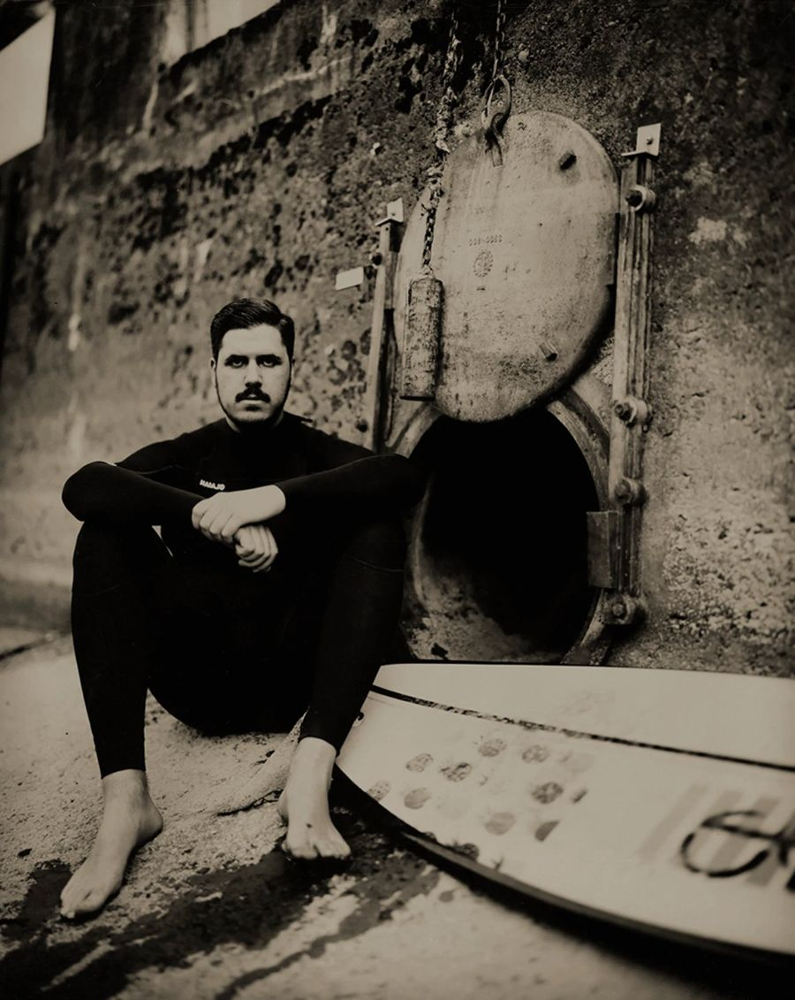

Bild folgt
Das Titelbild für den Herbstkatalog von Hauptner Jagd in der Schweiz und in Deutschland: zwei Jäger auf der Pirsch im Haslimoos, im Morgennebel bei Sonnenaufgang.
Teamleiter Technischer Support und Student Digital Business & AI an der BFH. Im Beruf Support-Prozesse und Web, in der Freizeit Kamera und Schnitt.
Technik Projekte ansehen und Gestaltung

Ich baue Abläufe, die funktionieren, und stehe für gute Bilder früh auf.
Ich komme aus Allmendingen bei Thun und habe meine Lehre als Mediamatiker beim Bundesamt für Informatik und Telekommunikation (BIT) gemacht. Seit zweieinhalb Jahren leite ich ein Team im technischen Support. Daneben studiere ich Digital Business & AI an der Berner Fachhochschule.
Privat fotografiere und filme ich, am liebsten draussen in der Natur und bei Wildtieren, oft bei Sonnenaufgang.
Vom Konzept über das Shooting bis zum fertigen Bild oder Film. Für Kundenaufträge und für mich selbst, am liebsten draussen.
Abläufe im technischen Support so bauen, dass sie für Kundinnen, Kunden und Team funktionieren. Wo es hilft, mit KI-Werkzeugen.
Digital Business & AI an der Berner Fachhochschule. Aus dem Modul Web Engineering ist diese Seite entstanden.
Das Titelbild für den Herbstkatalog von Hauptner Jagd in der Schweiz und in Deutschland: zwei Jäger auf der Pirsch im Haslimoos, im Morgennebel bei Sonnenaufgang.
Ein einstündiger Dankesfilm zur Pensionierung einer langjährigen Person bei Reka, als Überraschung im Kinosaal vor über 100 Gästen gezeigt.